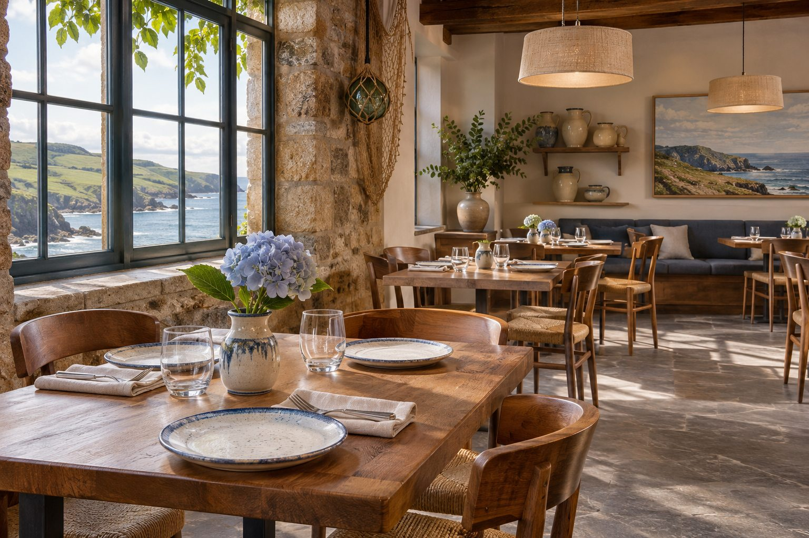
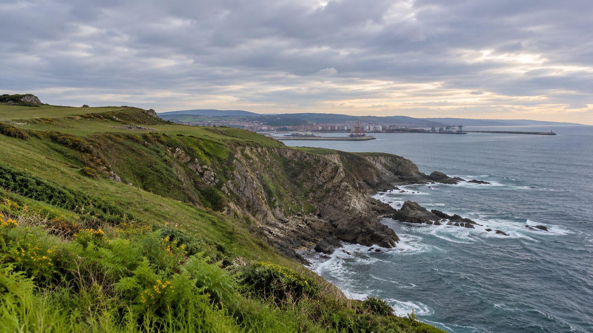

Campa Torres Gijón
Cocina del norte.
Con calma y con vistas.
Cocina gallega y asturiana cerca de la Campa Torres. La mesa, la sidra y el paisaje de Gijón se encuentran aquí.
Fotografía ilustrativa: no representa un plato ni una vista real del restaurante.
El restaurante
De la tierra, del mar y de aquí.
A Caldeira nació a la sombra de una panera en el entorno de la Campa Torres. Su cocina reúne tradición gallega y asturiana. Lleva más de treinta años recibiendo a quienes se acercan a su mesa.
Hay distintas maneras de disfrutarla: la pulpería, los comedores, la sidrería y la terraza. Todo con el paisaje de Gijón muy cerca.
Planifica tu visitaCocina de aquíTradición gallega y asturiana
Varias formas de venirPulpería, comedor y sidrería
Cerca de la costaEntorno de la Campa Torres
Elige tu momento
Un lugar, varios ambientesSiempre hay una forma
de sentirse en casa.
Una comida tranquila, una celebración o un encuentro improvisado: hay distintos espacios para compartir la mesa.
Bar y pulpería
Un espacio que A Caldeira presenta al estilo de un chigre tradicional.
La sidrería
En la planta inferior, con acceso independiente desde el exterior.
La terraza
El restaurante indica que dispone de terraza durante todo el año.
Imagen ilustrativa generada para este concepto. No muestra el interior real.
Menú del día
A Caldeira indica que ofrece menú del día. Consulta el contenido y el precio vigentes directamente con el restaurante.
Comida para llevar
Una opción publicada en su web para disfrutar de su cocina fuera del restaurante.
Menús para grupos
Para reuniones y celebraciones, con propuesta a consultar con el equipo.

Compartir la mesa
Un sitio para
reunirse.
Para organizar una comida familiar, una reunión de empresa o un evento, habla con el equipo y consulta la propuesta actual de menús para grupos.
- Menús para grupos
- Celebraciones familiares
- Comidas de empresa
Para venir sin dudas
Los detalles también importan.
Terraza todo el añoSegún la información publicada por el restaurante.
Aparcamiento amplioPara llegar y quedarse sin prisas.
Zona infantil y tronasTronas sujetas a disponibilidad.
Acceso sin barrerasLa web también indica aseo adaptado.
Tu mesa te espera
La mejor forma de empezar es llamar.
El restaurante indica que el teléfono es el canal preferente para reservar. En esta propuesta, ese paso está siempre visible.
Encuéntranos
A un paso de
la Campa Torres.
Carretera Campa Torres, 1500
33299 Gijón, Asturias
Horario de cocina
- Lunes
- Cerrado
- Martes a jueves
- 13:00–16:00 · 20:30–22:30
- Viernes y sábado
- 13:00–16:00 · 20:30–23:00
- Domingo
- 13:00–16:00 · 20:30–22:30
Horarios publicados en la web actual. Confirmar antes de la visita.
contacto@acaldeira.netAntes de venir
Lo esencial,
bien claro.
¿Cómo puedo reservar?
El restaurante indica que prefiere las reservas por teléfono: 985 323 063. Si escribes por correo, pide hacerlo con al menos 72 horas de antelación y espera su confirmación.
¿Hay opciones para grupos?
Sí, A Caldeira publica menús para grupos y celebraciones. Consulta disponibilidad y propuesta actual con el restaurante.
¿Puedo pedir comida para llevar?
Su web indica que prepara comida para llevar. Confirma la oferta vigente y la recogida directamente con el equipo.
¿Cómo se llega?
Está en Carretera Campa Torres, 1500, Gijón. Su web indica que la línea 21 de autobús llega hasta allí; conviene confirmar el recorrido y horario actuales.